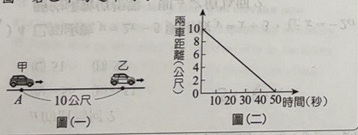
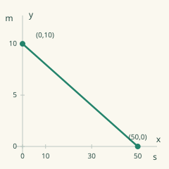
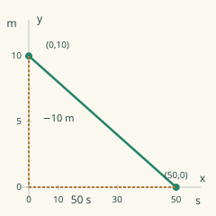
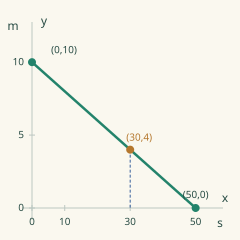
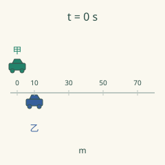
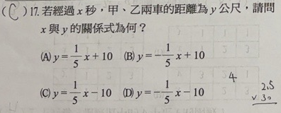
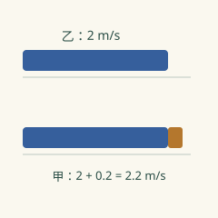
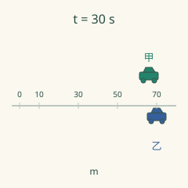
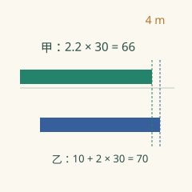
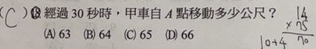

完整原題
作答所需文章／材料
如圖（一），在同一直線上，甲自A點開始追趕等速率前進的乙車，且圖（二）表示兩車距離與所經時間的線型關係圖。若乙車的速率為每秒2公尺。
數學第17題｜兩車距離與時間
數學第18題｜甲車移動的路程
先想一想，再查看答案、解說與原圖
數學第17題｜兩車距離與時間
分享原卷｜第17題 · 首次出題日期 2026-11-05 · 原AI對話 ↗
逐項解析
| 選項與原句 | 判讀 | 句意與判斷理由 |
|---|---|---|
| (A) y＝（1/5）x＋10 | 不選 | 斜率正表示間距增加，與圖中下降不符。 |
| (B) y＝－（1/5）x＋10 | 應選 | 起始10公尺，50秒降至0，斜率－1/5且截距10，正確。 |
| (C) y＝（1/5）x－10 | 不選 | 斜率方向與初始值都不符。 |
| (D) y＝－（1/5）x－10 | 不選 | 雖為負斜率，但初始距離誤為－10公尺。 |
詳細說明與解題步驟
由圖讀出起點與追上時間
圖（二）在x＝0時，兩車相距10公尺；50秒時相距0公尺，所以線段經過（0，10）與（50，0）。
距離每秒的改變量＝（0－10）÷（50－0）＝－1/5公尺／秒。初始距離是10，故y＝－（1/5）x＋10，選B。
A、C斜率為正，表示距離隨時間增加，與圖不符。C、D的截距是－10，等於說剛開始的兩車距離為負數，也與10公尺不符。可再用x＝50檢驗B：y＝－10＋10＝0，正好對應追上。
y是兩車之間的距離，不是甲或乙各自移動的路程。乙速率每秒2公尺不是此距離函數的斜率；－1/5表示兩車間距每秒縮短0.2公尺。圖示只描繪追上前0≤x≤50，不能將負距離當作追上後的實際間距。
新製距離圖｜橫軸秒、縱軸公尺；綠甲、藍乙。

① 看清y是兩車間距
共圖經過（0，10）與（50，0）：一開始相距10公尺，50秒時追上。y不是甲或乙的路程。
新製距離圖｜橫軸秒、縱軸公尺；綠甲、藍乙。

② 間距每秒少0.2公尺
斜率＝（0−10）÷（50−0）＝−1/5。50秒少10公尺，所以斜率必須是負的。
新製距離圖｜橫軸秒、縱軸公尺；綠甲、藍乙。

③ 用初值加上每秒變化
初值10，故y＝−（1/5）x＋10，選B。例：30秒時y＝4；50秒時y＝0，都符合。

④ 追上前的間距由10降到0
答案 B：y＝−（1/5）x＋10
- 綠車代表甲、藍車代表乙；第四圖顯示起始間距10公尺。
- 斜率−1/5是間距縮短率，不是乙速率2。
- 圖只描述0～50秒追上前，不延伸成負距離。
核對註記：已實開真正上傳的兩頁原卷及裁圖，逐題核對條件、圖形與全部選項。日期為首次原卷核對訊息的台灣日，實際考試日期未提供。未確認冊次或教材章節，歸綜合。
原圖（僅本題）

數學第18題｜甲車移動的路程
分享原卷｜第18題 · 首次出題日期 2026-11-05 · 原AI對話 ↗
逐項解析
| 選項與原句 | 判讀 | 句意與判斷理由 |
|---|---|---|
| (A) 63 | 不選 | 由追及速率2.2公尺／秒計算，30秒應為66，不是63。 |
| (B) 64 | 不選 | 2.2×30＝66，不是64。 |
| (C) 65 | 不選 | 2.2×30＝66，不是65。 |
| (D) 66 | 應選 | 甲速率2＋10/50＝2.2，乘30秒得66公尺。 |
詳細說明與解題步驟
先求每秒縮短多少距離
由共圖可知，甲原本落後乙10公尺，50秒後追上，因此每秒縮短的間距為10÷50＝0.2公尺。這是甲比乙快的相對速率，不是甲的速率。
乙每秒走2公尺，所以甲的速率為2＋0.2＝2.2公尺／秒。30秒時甲自A點移動2.2×30＝66公尺，選D。
另一解法：30秒後乙移動2×30＝60公尺，位置在距A點10＋60＝70公尺處。此時兩車距離由第17題的式子得10－0.2×30＝4公尺，所以甲的位置是70－4＝66公尺。
若直接算乙的2×30＝60，或只算間距減少0.2×30＝6，都不是本題問的甲車路程。A、B、C都不符合上述兩種互相驗證的計算。
新製追及圖｜綠甲、藍乙；位置以原甲起點A為0公尺。
① 50秒追上，求的是速率差
甲原本落後10公尺，50秒追上，每秒比乙多走10÷50＝0.2公尺，這只是速率差。
新製追及圖｜綠甲、藍乙；位置以原甲起點A為0公尺。

② 把乙的速率加回去
乙每秒2公尺，甲要比乙快0.2，所以甲速率為2＋0.2＝2.2公尺／秒；不是0.2或2。
新製追及圖｜綠甲、藍乙；位置以原甲起點A為0公尺。

③ 30秒甲自A走66公尺
甲路程2.2×30＝66。此時乙在A前方10＋2×30＝70，間距70−66＝4，也與前題吻合。

④ 分清速率差、個別速率與路程
答案 D：66公尺
- 甲從0開始，乙從前方10公尺開始。
- 甲2.2×30＝66；乙的路程60不是甲的答案。
- 乙位置70減剩餘間距4，也得到甲位置66。
核對註記：已實開真正上傳的兩頁原卷及裁圖，逐題核對條件、圖形與全部選項。日期為首次原卷核對訊息的台灣日，實際考試日期未提供。未確認冊次或教材章節，歸綜合。
原圖（僅本題）
